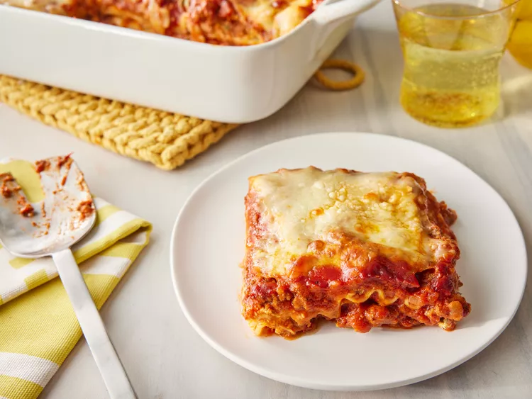

Step 1
Gather all your ingredients.

Step 2
Cook sausage, ground beef, onion, and garlic in a Dutch oven over medium heat until well browned.

Step 3
Stir in crushed tomatoes, tomato sauce, tomato paste, and water. Season with sugar, 2 tablespoons parsley, basil, 1 teaspoon salt, Italian seasoning, fennel seeds, and pepper. Simmer, covered, for about 1 ½ hours, stirring occasionally.

Step 4
Bring a large pot of lightly salted water to a boil. Cook lasagna noodles in boiling water for 8 to 10 minutes. Drain noodles, and rinse with cold water.

Step 5
In a mixing bowl, combine ricotta cheese with egg, remaining 2 tablespoons parsley, and 1/2 teaspoon salt.

Step 6
Preheat the oven to 375 degrees F (190 degrees C).
Step 7
To assemble, spread 1 ½ cups of meat sauce in the bottom of a 9x13-inch baking dish. Arrange 6 noodles lengthwise over meat sauce, overlapping slightly. Spread with 1/2 of the ricotta cheese mixture. Top with 1/3 of the mozzarella cheese slices. Spoon 1 ½ cups meat sauce over mozzarella, and sprinkle with 1/4 cup Parmesan cheese.

Step 8
Repeat layers, and top with remaining mozzarella and Parmesan cheese. Cover with foil: to prevent sticking, either spray foil with cooking spray or make sure the foil does not touch the cheese.

Step 9
Bake in the preheated oven for 25 minutes. Remove the foil and bake for an additional 25 minutes.

Step 10
Rest lasagna for 15 minutes before serving.
